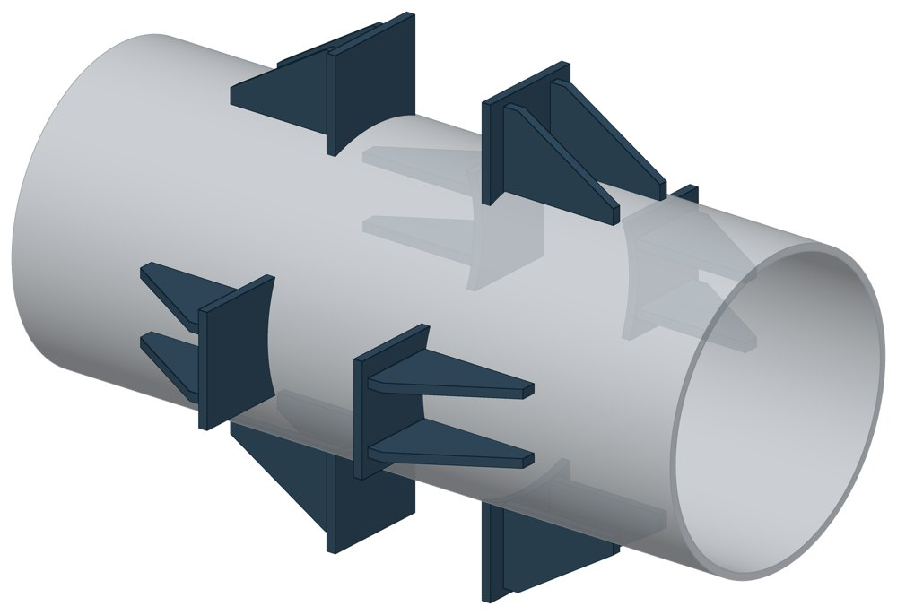
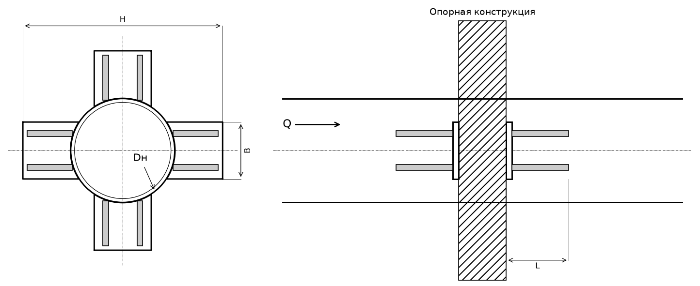

Опора неподвижная четырёхупорная ТС-661
Неподвижная упорная опора из восьми упоров: по четыре с каждой стороны опорной конструкции. Упоры стоят вокруг трубы крестом или под 45°.

- Диаметр трубы Dн
- 133–1420 мм
- Документ
- Серия 5.903-13 вып. 7-95
- Исполнений
- 15
- Осевая Q
- до 1000 кН
- Масса
- 8,8–151 кг
- Сталь
- Листовые детали — Ст3сп5 ГОСТ 14637-89. Для холодного климата — низколегированная сталь, в том числе 09Г2С; размеры опоры при этом не меняются.
- Покрытие
- По альбому серии — окраска по грунту, кроме поверхностей под сварку. Вид покрытия согласуется при заказе.
- 3D-модели
- у всех исполнений
Применение и монтаж
Назначение: где применяется
Трубопроводы тепловых сетей Dн 133–1420 мм. Держит осевую силу Q от 70 до 1000 кН. Упоры опираются на балки опорной конструкции вокруг трубы.
Монтаж: как устанавливается
Упоры приваривают к трубе, к опорной конструкции они прилегают свободно. По чертежу оставляют зазоры: 20 мм — для бокового перемещения трубопровода, 30 мм — для осадки.
Отличия от соседних типов
Сила меньше — двухупорная ТС-660: вдвое меньше упоров и сварки. Сила больше и Dн от 426 мм — четырёхупорная усиленная ТС-664 (до 1700 кН). Труба проходит через стену — щитовая ТС-666.
Габаритная схема ТС-661

Состав комплекта на одну опору
| Упор (плита с двумя рёбрами) | 8 шт. |
Таблица исполнений ТС-661
| Обозначение | Код ПРОМБУРГ | Dнмм | Стенка Sмм | QкН | Ширина упора Вмм | Длина упора Lмм | Габарит Нмм | Массакг | 3D |
|---|---|---|---|---|---|---|---|---|---|
| ТС-661.00.00 | ПБ-661-0133-1 | 133 | 4+1 / 5+1 | 70 | 80 | 110 | 260 | 8,8 | 3D |
| ТС-661.00.00-01 | ПБ-661-0159-1 | 159 | 4+1 / 5+2 | 100 | 90 | 112 | 320 | 13,2 | 3D |
| ТС-661.00.00-02 | ПБ-661-0219-1 | 219 | 4+1 / 7+2 | 120 / 150 | 120 | 132 | 420 | 23,3 | 3D |
| ТС-661.00.00-03 | ПБ-661-0273-1 | 273 | 6+1 / 8+2 | 120 / 180 | 120 | 132 | 480 | 22,5 | 3D |
| ТС-661.00.00-04 | ПБ-661-0325-1 | 325 | 6+1 / 8+2 | 120 / 220 | 120 | 162 | 530 | 25,2 | 3D |
| ТС-661.00.00-05 | ПБ-661-0377-1 | 377 | 6+2 / 9+2 | 150 / 250 | 140 | 162 | 580 | 28,3 | 3D |
| ТС-661.00.00-06 | ПБ-661-0426-1 | 426 | 7+2 / 10+2 | 180 / 300 | 160 | 196 | 660 | 53,4 | 3D |
| ТС-661.00.00-07 | ПБ-661-0530-1 | 530 | 8+2 / 11+2 | 180 / 250 | 200 | 226 | 770 | 64,6 | 3D |
| ТС-661.00.00-08 | ПБ-661-0630-1 | 630 | 8+2 / 12+2 | 360 / 450 | 240 | 226 | 870 | 67,7 | 3D |
| ТС-661.00.00-09 | ПБ-661-0720-1 | 720 | 9+2 / 11+2 | 360 / 550 | 280 | 266 | 960 | 82,4 | 3D |
| ТС-661.00.00-10 | ПБ-661-0820-1 | 820 | 9+2 / 11+2 | 450 / 650 | 300 | 266 | 1060 | 86,4 | 3D |
| ТС-661.00.00-11 | ПБ-661-0920-1 | 920 | 10+2 / 14+2 | 480 / 550 | 320 | 266 | 1160 | 92 | 3D |
| ТС-661.00.00-12 | ПБ-661-1020-1 | 1020 | 10+2 / 14+2 | 750 / 950 | 360 | 286 | 1260 | 105 | 3D |
| ТС-661.00.00-13 | ПБ-661-1220-1 | 1220 | 11+2 | 1000 | 400 | 336 | 1480 | 136 | 3D |
| ТС-661.00.00-14 | ПБ-661-1420-1 | 1420 | 14+2 | 1000 | 500 | 336 | 1680 | 151 | 3D |
Два значения через дробь — исполнение рассчитано на две толщины стенки трубы.
Чтобы заказать, сообщите обозначение и код ПРОМБУРГ: +7 (499) 325-51-35, promburg@yandex.ru.
Нормативные документы
- Серия 5.903-13 вып. 7-95 Опоры трубопроводов неподвижные. Рабочие чертежи (PDF, 127 с.) — документ, по которому изготавливается изделие
- ГОСТ 14637-89 Прокат толстолистовой из углеродистой стали обыкновенного качества — редакция, на которую ссылается альбом серии; действующую редакцию уточняйте
Связанные позиции
- Усиленное исполнение: ТС-664 — неподвижная четырёхупорная усиленная
- Соседний тип: ТС-660 — неподвижная двухупорная
- Парная подвижная опора: ТС-623 — скользящая приварная (общий диапазон Dн 133–159)
- Парная подвижная опора: ТС-624 — скользящая приварная (общий диапазон Dн 194–1420)
Собрать узел с этим изделием
- Конструктор узла: собрать участок с компенсатором под свои данные труба, длина, среда, условия — состав узла и спецификация бесплатно
На трубу Dн 133–1420 мм в каталоге
Позиции каталога с исполнениями на те же наружные диаметры трубы.
Детали трубопровода
- Фланец стальной плоский приварной общих Dн: 15
- Фланец стальной воротниковый общих Dн: 14
- Отвод стальной крутоизогнутый 90° общих Dн: 13
- Отвод стальной крутоизогнутый 90°, 09Г2С общих Dн: 11
- Днище стальное эллиптическое общих Dн: 9
- Заглушка стальная эллиптическая общих Dн: 9
- Переход стальной концентрический общих Dн: 8
- Отвод нержавеющий 90° общих Dн: 1
Компенсаторы
- Компенсатор сильфонный стартовый СК общих Dн: 15
- Компенсатор сильфонный 2ОПКР общих Dн: 14
- Компенсатор сильфонный 2ОПКР (ИЯНШ) 2ОПКРИ общих Dн: 14
- Компенсатор сильфонный 2СКУ.М 2СКУМ общих Dн: 14
- Компенсатор сильфонный 2СКУ.М (ИЯНШ) 2СКУМИ общих Dн: 14
- Компенсатор сильфонный 2СКУ.ППМ (ИЯНШ) 2СКУППМИ общих Dн: 14
- Компенсатор сильфонный КС общих Dн: 14
- Компенсатор сильфонный КСО общих Dн: 14
- Компенсатор сильфонный КСО (ИЯНШ) КСОИ общих Dн: 14
- Компенсатор сильфонный КСОФ общих Dн: 14
- Компенсатор сильфонный ОПКР общих Dн: 14
- Компенсатор сильфонный ОПКР (ИЯНШ) ОПКРИ общих Dн: 14
- Компенсатор сильфонный сейсмический общих Dн: 14
- Компенсатор сильфонный СКУ.М СКУМ общих Dн: 14
И ещё 20 типов — в оглавлении каталога.
Другие опоры и подвески
- Опора неподвижная двухупорная ТС-660 общих Dн: 15
- Опора неподвижная щитовая ТС-666 общих Dн: 15
- Опора скользящая хомутовая ТС-626 общих Dн: 15
- Опорные плиты диэлектрические ТС-632 общих Dн: 15
- Хомутовые опоры СК 2109-92 общих Dн: 15
- Опоры приварные неподвижные скользящие ОПН общих Dн: 15
- Опоры сварные скользящие неподвижные и направляющие СТО 79814898-130 общих Dн: 15
- Опора приварная скользящая и неподвижная ОСТ 34-10-616-93 общих Dн: 15
- Опоры хомутовые скользящие ОСТ 34-10-617-93 общих Dн: 15
- Опоры хомутовые неподвижные ОСТ 34-10-618-93 общих Dн: 15
И ещё 94 типа — в оглавлении каталога.
Другие типы раздела
Неподвижные опоры тепловых сетей (ТС-659…ТС-671)
- Опора неподвижная хомутовая ТС-659
- Опора неподвижная двухупорная ТС-660
- Опора неподвижная двухупорная усиленная ТС-663
- Опора неподвижная четырёхупорная усиленная ТС-664
- Опора неподвижная двухупорная сальниковых компенсаторов ТС-665
- Опора неподвижная щитовая ТС-666
- Опора неподвижная щитовая усиленная ТС-667
- Опора неподвижная боковая ТС-668
- Опора неподвижная хомутовая бескорпусная ТС-669
- Опора неподвижная хомутовая с корпусом ТС-670
- Опора неподвижная бугельная с корпусом ТС-671
- Опора неподвижная двухупорная ТС-760
Частые вопросы
Какую неподвижную опору выбрать: хомутовую, упорную, щитовую?
Выбор идёт по расчётной осевой силе и по тому, на что опора опирается. Малый диаметр и небольшая сила — хомутовая ТС-659. Нужна высота под изоляцию — хомутовая с корпусом ТС-670 или бугельная ТС-671. Труба проходит сквозь стенку — щитовая ТС-666, при большой силе усиленная ТС-667. Упор в балку или траверсу — двух- и четырёхупорные ТС-660, ТС-661, при больших нагрузках усиленные ТС-663, ТС-664.
Зачем нужна толщина стенки трубы?
Для Dн от 426 мм в одной позиции серии есть исполнения под разные стенки: геометрия близкая, но допускаемая нагрузка другая — её ограничивают местные напряжения в стенке трубы. Без толщины стенки исполнение однозначно не определить. Пример — щитовая ТС-666 на Dн 530: 400 кН при стенке 7 мм и 550 кН при 9 мм.
Какую нагрузку выдерживает опора?
Допускаемая нагрузка задана в таблице для каждого исполнения — она в первой группе колонок каждой карточки. Хомутовая ТС-659 — осевая Q от 5 до 25 кН, щитовая ТС-666 — от 50 до 3300 кН, хомутовая с корпусом ТС-670 — Q до 380 кН и боковая T до 200 кН.
В старом проекте нагрузка в тс, а здесь в кН. Как сравнить?
Серия 4.903-10 даёт нагрузки в тонна-силах, серия 5.903-13 — в килоньютонах. 1 тс = 9,81 кН, то есть 10 тс — это около 98 кН. В таблицах каталога переключатель единиц пересчитывает значения.
Кто считает нагрузку на неподвижную опору?
Нагрузку определяет проектировщик расчётом трубопровода на прочность и компенсацию: она зависит от схемы трассы, а не только от диаметра. По заданным Dн, стенке и нагрузкам Q, P, T подбирается исполнение из таблицы.
Неподвижную опору приваривают к строительной конструкции?
Упоры и щиты приваривают к трубе, а к несущей конструкции они прилегают свободно, без приварки — так разгружаются от крутящих моментов и опора, и конструкция. У хомутовой ТС-659 упоры приваривают к трубе, а хомут — к балке.